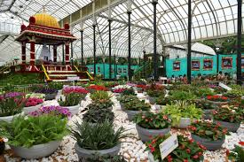

Lalbagh Botanical Garden
Lalbagh Botanical Garden is one of the most famous gardens in India, located in Bangalore. It is known for its beautiful landscape, diverse flora, and historical significance. The garden was originally commissioned by Hyder Ali and later expanded by his son, Tipu Sultan.
Spread over 240 acres, Lalbagh houses thousands of plant species, a famous glasshouse modeled after London’s Crystal Palace, and a 3000-million-year-old rock formation known as the Lalbagh Rock. The annual flower shows held in the glasshouse attract thousands of visitors.